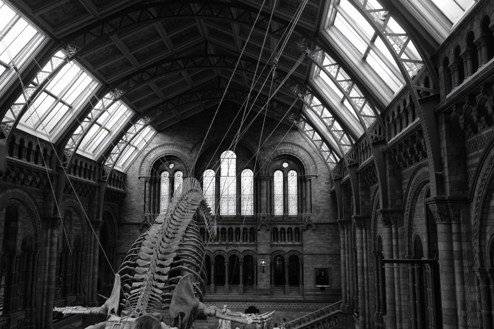
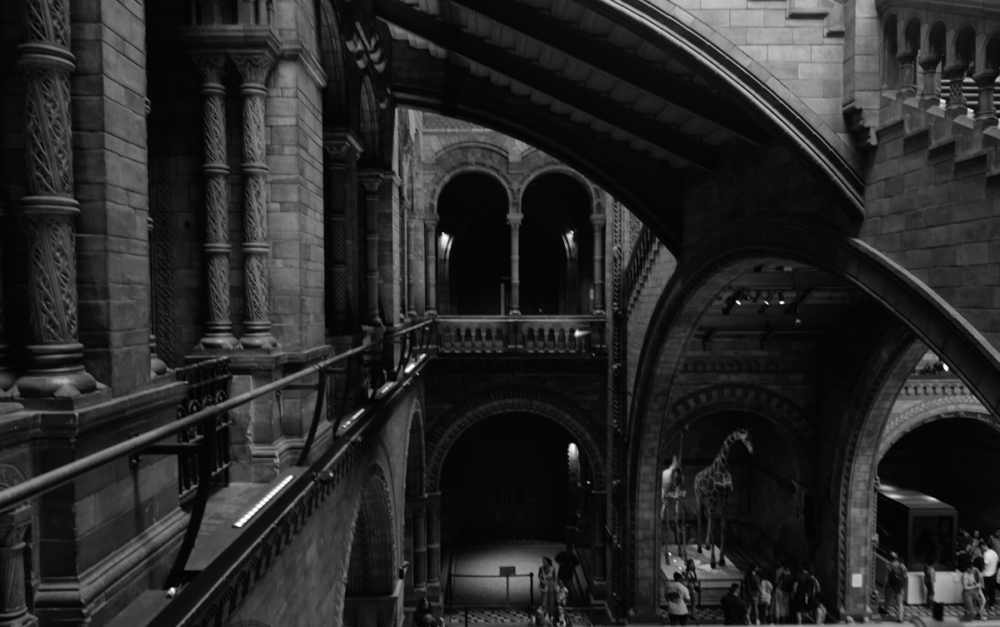
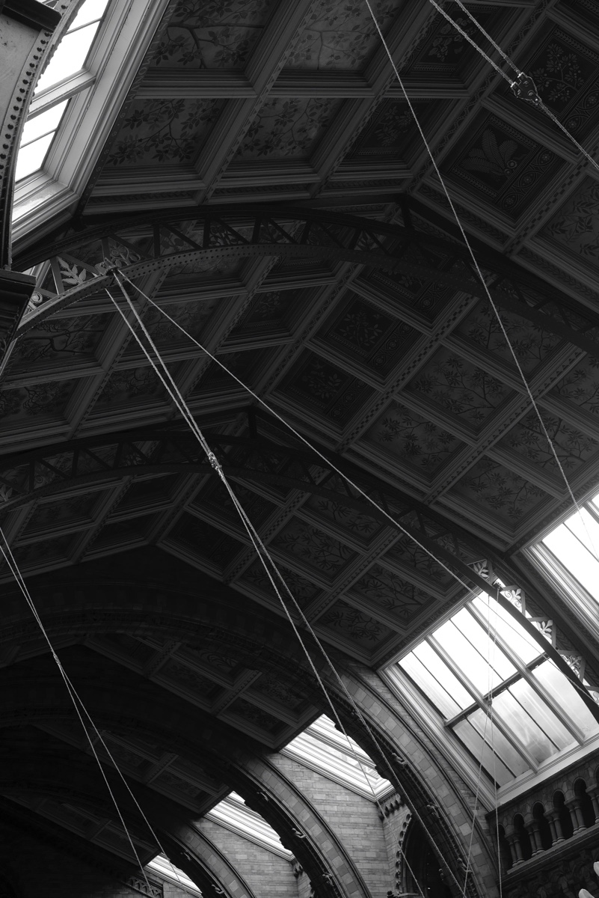
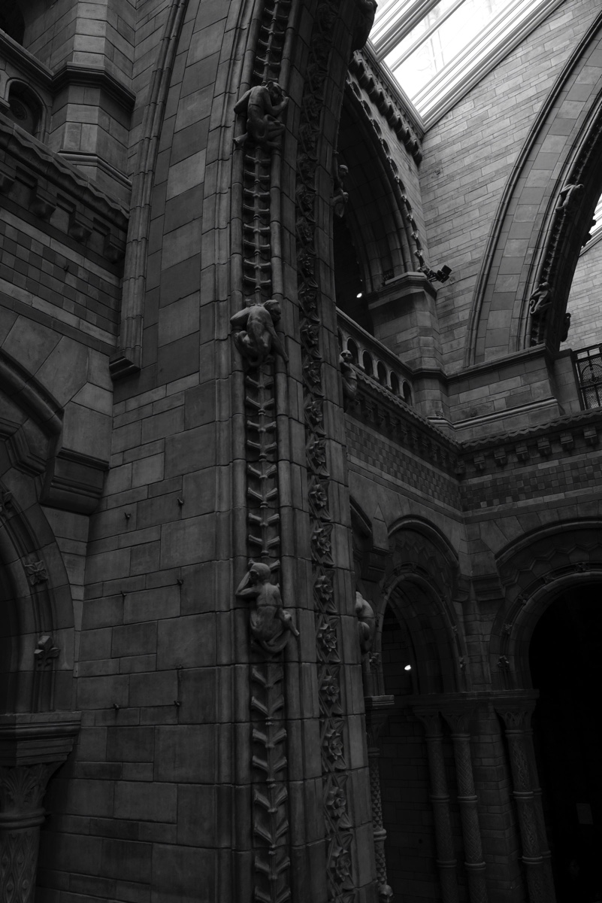

natural history museum,london
a geometric study of interior structure, material articulation, and spatial elements within the natural history museum.

fig. 01 — central hall / vertical structure and light falloff

fig. 02 — structural detail / carved stone and repetition

fig. 03 — upper gallery / light filtering through vaulted space

fig. 04 — interior corridor / compression and directional framing

fig. 05 — facade condition / ornament and surface variation